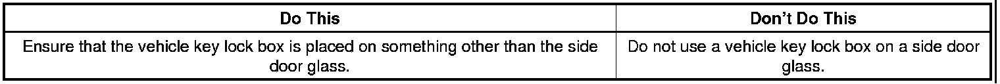
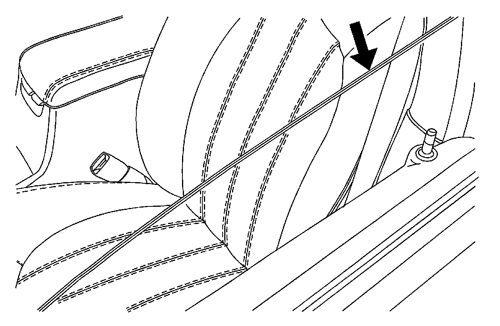

Body - Side Window Chipping Information
INFORMATIONBulletin No.: 06-08-64-001C
Date: December 23, 2011
Subject: Information on Side Door Window Glass Chipping Caused by Hanging Vehicle Key Lock Box
Models:
2013 and Prior GM Passenger Cars and Trucks
Supercede:
This bulletin is being revised to add model years. Please discard Corporate Bulletin Number 06-08-64-001B (Section 08 - Body and Accessories).

- In several warranty parts review cases, side door window glass was observed with a chip or chips on the top side of the window glass. Dealer contacts confirmed that they use a vehicle key lock box on the front side door window glass.
- A random selection of side door glass returns will be conducted to confirm adherence. If a side door glass is discovered with a chip or chips in the location previously described, the side door glass will be returned to the dealership for debit.
Example of Side Door Glass

- DO NOT place a vehicle key lock box on a side door window glass.

Disclaimer